HOME
Deleting Data
Topic im talking about
Now let's see how we can delete data.
First we need to add a button infront of each user...
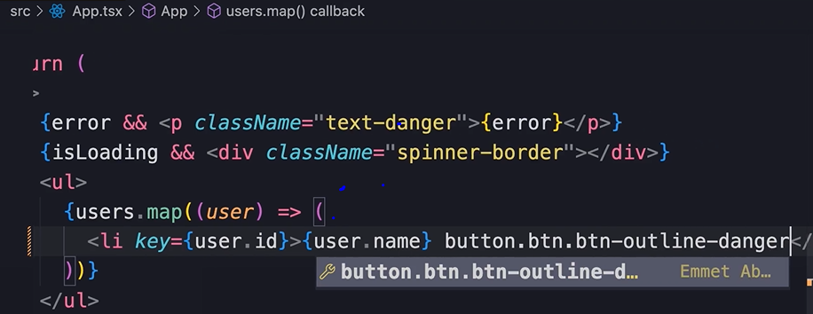
react Whitespace
If you add this component and save, the Prettier extention in vs code
will add this blank space...
 It adds this because unlike html, a space in your code will not render
a space on the page.
It adds this because unlike html, a space in your code will not render
a space on the page.
When JSX compiles, it removes all whitespace between elements.
But like this, our buttons are horribly misaligned.
Let's improve the css of this page.
Style the page
First, let's add these bootstrap classes to the list...
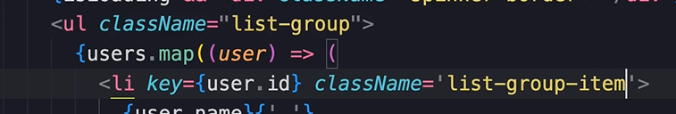
Next, we want to apply space-between to the usernames and buttons.
So use bootstrap to make the li a flex-container with justify content
space between...
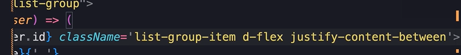
It should look better now.
Also we don't need that whitespace in the code now.
Next we implement the delete functionality.
The delete functionality
First, we set onClick of the button to a funtion, and that function
will call a deleteUser function that we will make next.
Then we pass the deleteUser function the user obj that we are
currently rendering...
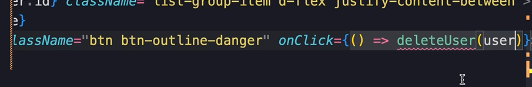
Next, just above the return, we declare the deleteUser function...
deleteUser should take an obj of type User...
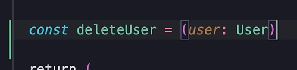
This is referencing the User interface that we defined above the App.
Now, in the delete user function, we have 2 options...
We can either update the UI first, and then call the server, or we can
call the server first and then update the UI.
These two approaches have names...
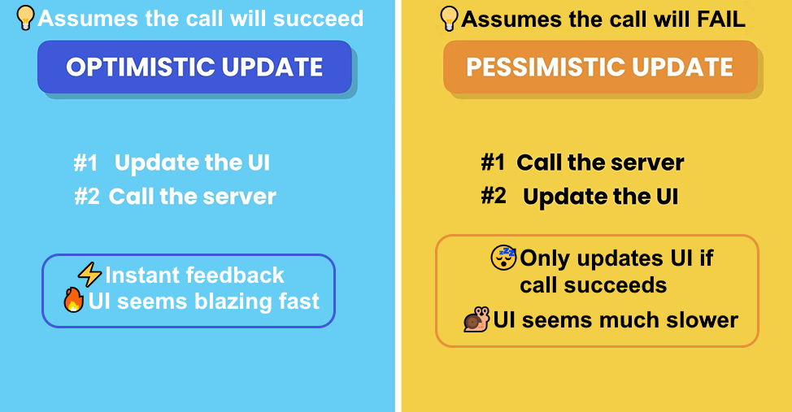
Whenever possible, we should prefer the optimistic update.
So first we filter set the users to filter through and get rid of the
one...
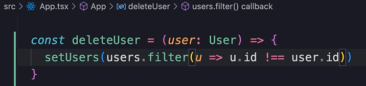
Great! if you test it now the UI is working. Now we need to apply
those same changes to the server.
For that we call axios.delete, pass the url of the server we are on,
then pass the id of the user we want to delete.
So first call axios delete...
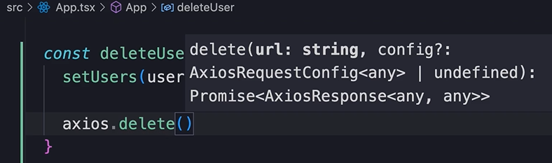
Then pass the url with the id of the user...
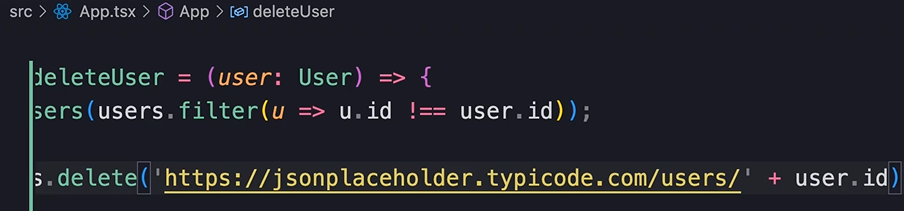
And just like before, this returns a promise, but we don't want to do
anything with it when the promise is resolved, so just call catch by
itself...
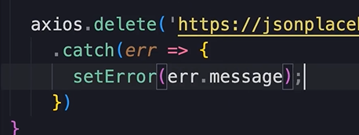
Along with setError, we want to set the UI back to the original state.
So spread and store the users array as original users...
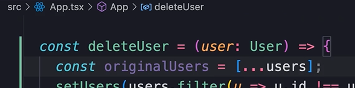
If we catch an err, simply set the users back...
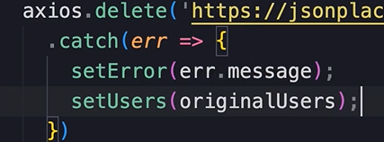
Everything should be working!
To simulate an err, mess up the delete url.